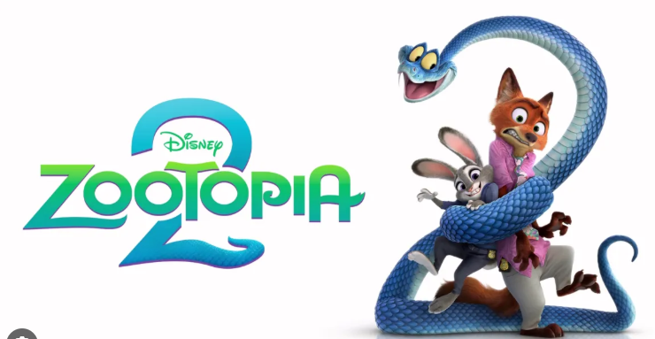
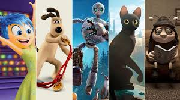

El fenómeno musical Bad Bunny cautivó a miles de fanáticos en su esperado concierto en la República Dominicana, dejando una huella imborrable en la escena musical del país.
Por: Monica Vega
El pasado sábado, el estadio Quisqueya Juan Marichal se convirtió en el epicentro de la música urbana cuando Bad Bunny subió al escenario para ofrecer un espectáculo lleno de energía, emoción y una conexión única con su audiencia dominicana.
Desde el primer acorde, Bad Bunny demostró por qué es uno de los artistas más influyentes de la música latina en la actualidad. Con una producción impresionante que incluía luces, efectos visuales y una escenografía innovadora, el concierto fue una experiencia sensorial que mantuvo a los asistentes al borde de sus asientos.
El repertorio incluyó una mezcla de sus éxitos más populares, así como canciones de su último álbum, lo que permitió a los fanáticos disfrutar de una variedad de estilos y ritmos. La interacción constante con el público, los momentos emotivos y la energía contagiosa hicieron que el concierto fuera inolvidable para todos los presentes.
Intro del concierto
Con un intro espectacular, grabado por dos jóvenes desde un barrio dominicano y con la jerga criolla que hizo sentir al público parte del concepto, así comenzó la experiencia que repite gran parte de la estética lograda de la residencia de 31 conciertos en el Coliseo de Puerto Rico.
Hizo uso de la esencia latina y caribeña -y no urbana- al dar inicio a ritmo de salsa, y con orquesta en vivo, el éxito "La mudanza". También interpretó "Callaita".
Entrada de Bad Bunny
"Quiero una bulla que se escuche allá en Puerto Rico", fueron las primeras palabras de Benito Antonio Martínez Ocasio, nombre de pila del artista de 31 años, ante un estadio en su total capacidad, repleto de dominicanos y extranjeros.
Con un vestuario que combinaba elementos urbanos y toques tradicionales dominicanos, Bad Bunny mostró su aprecio por la cultura local. Durante el concierto, hizo referencias a la historia y tradiciones del país, lo que generó una conexión aún más profunda con su audiencia.
Zootopia 2 recauda más de $80 millones de dólares a nivel global en su primer día en taquilla
Con guiños a la cultura pop y un montón de chistes visuales, esta secuela es la película animada de Disney más cercana a lo mejor de Pixar

Por: Monica Vega
Zootopia 2, la más reciente producción de Disney dirigida por Jared Bush y Byron Howard, debutó con una recaudación global de aproximadamente 81,1 millones de dólares en su primer día. De este total, 39,5 millones corresponden al mercado estadounidense y 41,6 millones provienen de 17 mercados internacionales.
China se posicionó como el principal motor de este éxito, con 34 millones de dólares recaudados en su día de estreno, convirtiéndose en el mayor estreno de una película animada de Hollywood en la historia de ese país. Este resultado representa el mejor lanzamiento de un estudio norteamericano en China desde 2021, un hecho poco frecuente tras la pandemia y la preferencia por las producciones locales en ese mercado.
Resultados internacionales sobresalientes
El éxito de Zootopia 2 no se limitó a China. En Francia, la película alcanzó la segunda mejor apertura del año, solo por detrás de Lilo & Stitch, ubicándose como el tercer mejor estreno de Disney en ese país, después de Moana 2 y Frozen 2. En Corea del Sur, la cinta debutó en el primer lugar del día, acumulando 1,7 millones de dólares. Esta cifra la convierte en la mejor apertura para una película animada estadounidense en el país en lo que va de 2025.
Alemania e Italia también tuvieron las mejores aperturas de 2025 para una animación de estudio, lo que refuerza el atractivo internacional de la franquicia Zootopia. Se espera que el estreno continúe batiendo registros, con estimaciones de recaudación internacional de entre 135 y 145 millones de dólares solo en el primer fin de semana, sin contar aún el mercado japonés, cuyo estreno está programado para diciembre.
Los logros de Zootopia 2 resultan especialmente significativos para las salas de cine y los distribuidores ante una serie de fracasos recientes en taquilla, como The Smashing Machine y Tron: Ares, que no lograron atraer al público. El estreno de Zootopia 2 representa un alivio importante para la industria, especialmente durante el fin de semana de Acción de Gracias en varios países, cuando se anticipa un aumento en la asistencia a los cines después de las celebraciones familiares.
La polémica por el concurso de Miss Universo que ganó la mexicana Fátima Bosch: los argumentos a favor y en contra de este tipo de certámenes
El certamen de belleza Miss Universo ha sido objeto de controversia en los últimos años, especialmente tras la victoria de la mexicana Fátima Bosch. Mientras algunos defienden estos concursos como plataformas para el empoderamiento femenino y la promoción de causas sociales, otros los critican por perpetuar estereotipos y estándares de belleza poco realistas.
Por: Monica Vega
Como hace años no ocurría, el concurso Miss Universo volvió a estar en el centro de las noticias globales. La saga que comenzó hace unas semanas concluyó este viernes cuando la mexicana Fátima Bosch resultó ganadora de la edición de 2025 durante la ceremonia de coronación en Tailandia.
La victoria de Bosch ha reavivado el debate sobre la relevancia y el impacto de los concursos de belleza en la sociedad contemporánea. A continuación, se presentan algunos de los principales argumentos a favor y en contra de estos certámenes.
Los criterios de votación opacos y subjetivos han dificultado desentrañar la red de acusaciones en torno a la final de este año. La cuestión de si Miss México, Fátima Bosch, debería haber ganado ya no se trata de su desempeño en el escenario, sino de acusaciones de fraude electoral, secretismo y favoritismo.
Uno de los jueces del concurso, Omar Harfouch, ha hecho numerosas acusaciones en redes sociales desde que renunció a su cargo, días antes de la final del viernes pasado. Entre ellas, el compositor franco-libanés afirmó que 30 finalistas fueron preseleccionadas en una “votación secreta” por un “jurado improvisado” compuesto por personas que no pertenecían al jurado oficial (una acusación que la Organización Miss Universo negó). Quizás más controvertido aun, afirmó que la victoria de Bosch también fue preescrita, influenciada por los vínculos comerciales entre el copropietario del certamen y presidente de la Organización Miss Universo, Raúl Rocha Cantú, y el padre de la reina de belleza mexicana.
Estas acusaciones han generado un intenso debate sobre la legitimidad de los concursos de belleza y su papel en la sociedad actual. A continuación, se presentan algunos de los principales argumentos a favor y en contra de estos certámenes.
Argumentos a favor
Empoderamiento femenino: Muchas participantes utilizan la plataforma para promover causas sociales y defender los derechos de las mujeres.
Oportunidades profesionales: Los concursos pueden abrir puertas en la industria del entretenimiento, la moda y otros campos.
Cultura y diversidad: Estos eventos celebran la diversidad cultural y permiten a las participantes compartir sus tradiciones y valores.
Argumentos en contra
Estereotipos de belleza: Los concursos a menudo promueven estándares de belleza poco realistas y excluyentes.
Objetificación: Se critica que estos eventos pueden reducir a las mujeres a su apariencia física, ignorando sus habilidades y talentos.
Presión social: La participación en estos concursos puede generar una presión significativa sobre las concursantes para cumplir con ciertas expectativas.
Los animes más esperados de 2026: fechas, estrenos y regresos que harán historia
El 2026 será una locura para todos los fans del anime. Estrenos, regresos épicos y finales muy esperados. Te contamos todo para que no se te pase nada.
Por: Monica Vega
El 2026 viene acercándose a toda velocidad y, si amas el anime, esa es una de las cosas que más te deben emocionar, pues el año que viene está cargado de estrenos, premieres y mucho más. Es por eso que traemos para ti la lista completa de todo lo que se ha revelado para los animes 2026.
Los animes confirmados para enero 2026: un arranque histórico
Entre lo ya confirmado, tenemos una mezcla explosiva de viejas favoritas de los fans y proyectos completamente nuevos que podrían convertirse en los próximos gigantes del anime. Te los dejamos todos a continuación para que los tengas en la mira.
Estrenos más esperados Enero 2026
A principio de año los fans tienen la agenda llena, pues llegan nuevas temporadas y nuevas historias que prometen emocionar a la audiencia.
Oshi no ko: Temporada 3 - Continuará con la historia de Aqua y Ruby en el mundo del espectáculo.
Fate/Strange Fake: Premiere - La historia se centra en una "Falsa Guerra del Santo Grial" que tiene lugar en la ciudad estadounidense de Snowfield.
Jujutsu Kaisen: Temporada 3 - La nueva temporada, titulada The Culling Game Part 1 (Juego del Sacrificio, Parte 1), adaptará el arco del manga del mismo nombre.
Frieren: Temporada 2 - La continuación de la historia de la elfa maga Frieren y sus aventuras después de la derrota del Rey Demonio.
Hell's Paradise: Temporada 2 - La nueva temporada continuará la historia del ninja Gabimaru y sus compañeros en la misteriosa isla de Shinsenkyo
Vigilantes:Temporada 2 - Spin-off del universo My Hero Academia
Estrenos primavera 2026
La primavera tampoco se queda corta, pues tres títulos clave ya tienen ventana confirmada para esta temporada:
Dorohedoro: Temporada 2 - Regresa con su mezcla única de acción, horror, comedia y fantasía oscura, ambientada en un mundo distópico dividido entre el "Hoyo" (donde viven los humanos) y el "Mundo de los Hechiceros"
Wistoria: Wand and Sword : Temporada 2 - La historia sigue a Will Serfort, un joven que se inscribe en la prestigiosa Academia Mágica Rigarden con el sueño de convertirse en uno de los Magia Vander, los magos más poderosos del mundo.
Daemons of the Shadow Realm: Premiere - La historia sigue a los hermanos gemelos Yuru y Asa, nacidos con el destino de gobernar entidades sobrenaturales conocidas como "Daemons" o "Tsugai". Separados desde una edad temprana, deben luchar por reunirse y descubrir los secretos de su nacimiento y su mundo, que enfrenta conflictos entre la tradición y la modernidad.
Más estrenos de animes para 2026
Hay varios animes confirmados para el 2026, pero que aún no revelan fecha exacta o temporada de estreno:
Bleach: Thousand-Year Blood War - The Calamity - Continúa la guerra final entre los Shinigamis y los Quincy, donde Ichigo descubre nuevos poderes mientras la Soul Society enfrenta su mayor amenaza.
Mushoku Tensei: Temporada 3 - Rudeus continúa su búsqueda de seres queridos desaparecidos mientras enfrenta nuevos desafíos emocionales y enemigos en un mundo lleno de magia.
Black Clover: Temporada 2 - Asta y los Caballeros Mágicos se enfrentan a enemigos más poderosos mientras descubren secretos sobre los demonios y el verdadero origen de su mundo.
Re:Zero: Temporada 4 - Subaru continúa lidiando con los bucles de muerte mientras enfrenta nuevas amenazas y revela verdades más oscuras sobre el mundo al que fue transportado.
Tokyo Revengers: Temporada 4 - Takemichi vuelve a viajar en el tiempo intentando alterar el destino de sus amigos, enfrentándose a nuevas pandillas, traiciones y giros dramáticos.
Después de un año lleno de estrenos de series y películas tan impresionantes que han batido récords, es de esperarse que el 2026 intente superarlo. Con secuelas esperadas y nuevas historias, es muy probable que pronto podríamos conocer a los nuevos fenómenos globales.
Los mejores estrenos de peliculas animadas 2025
El 2025 ha sido un año espectacular para las películas animadas, con una variedad de géneros y estilos que han cautivado tanto a niños como a adultos. Aquí te presentamos una lista de los 10 mejores estrenos de películas animadas de este año.

Por: Monica Vega
Top 10 Películas Animadas 2025
Zootopia 2 - La esperada secuela que continúa las aventuras en la ciudad de Zootopia.
Toy Story 5 - La continuación de la querida saga que sigue las aventuras de los juguetes de Andy.
Elio: - Una película de Pixar sobre un niño que se convierte en embajador galáctico.
Lilo y Stitch: - La esperada secuela que continúa las aventuras de Lilo y Stitch.
Inside Out 2 - La continuación de la aclamada película que explora las emociones humanas.
Los Tipos Malos 2 - La secuela de la película de DreamWorks Animation
Las guerreras k-pop: - Una producción de Sony Pictures Animation / Netflix
Chainsaw Man: Reze Arc: - Un filme de anime del estudio MAPPA
Wallace y Gromit: la venganza se sirve con plumas: - Un nuevo largometraje del estudio Aardman Animations.
Memorias de un caracol: - Película australiana de animación stop-motion de Adam Elliot.
 Por: Monica Vega
Por: Monica Vega